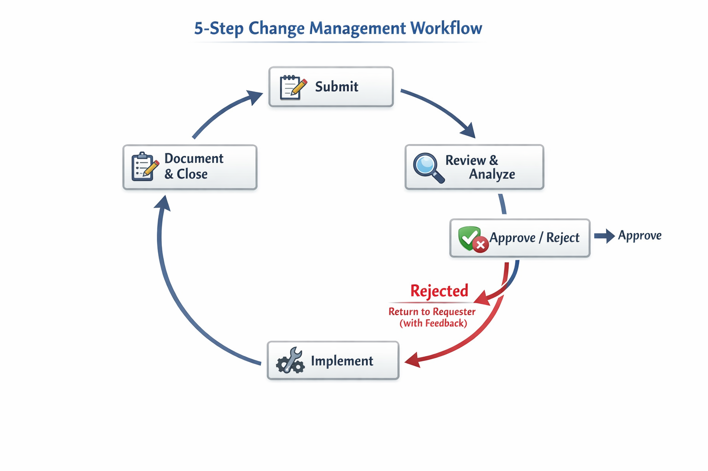

Standard, repeatable workflow for every proposed modification — reduce risk, prevent scope creep.
Understanding the change management process in software projects — official video resource.
Every change request, regardless of size, must follow this exact sequence.

Step 1 → Submit | Step 2 → Review | Step 3 → Approve | Step 4 → Implement | Step 5 → Document
Image placeholder: Insert workflow diagram here| Step | Action | Key Output |
|---|---|---|
| 1 Submit | Create a formal change request with required details. | Completed request form/ticket. |
| 2 Review & Analyze | Evaluate the change's impact on scope, timeline, budget, and risks. | Impact analysis document. |
| 3 Approve or Reject | A designated Change Authority makes a decision. | Approved or rejected status. |
| 4 Implement | Code, test, and deploy the approved change (using feature flags or gradual rollouts if possible). | Implemented change in the system. |
| 5 Document & Close | Update the change log with what was done, by whom, and the test results. | Closed change request and audit trail entry. |
Unreviewed changes are the primary cause of deployment failures and technical debt. Every change request, regardless of its size, must follow the full workflow. No exceptions.
Following the change management plan means adhering to a standard, repeatable workflow for every proposed modification. This ensures that no change is implemented without proper review, reducing risk and preventing scope creep.
Benefits: Reduced deployment failures, clear accountability, full audit trail, and better stakeholder communication.